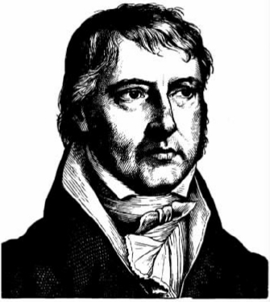

克尔凯郭尔有无数的评注者，不管他们在其他方面意见如何分歧，却都倾向于同意他不是一般意义上或传统意义上的哲学家。一般而言，人们认为，他写作的总体风格和思考的方向与在他写作前的约二百年间形成的、典型的哲学研究方法和目的大相径庭。读者若是指望在他的著作里看到清晰的论证、细致表述的前提和明确的结论，那么，他们通常会感到失望。在这方面，他表述观点的典型方式不仅与笛卡尔和斯宾诺莎等讲究秩序的哲学家那种严密的步步论证截然不同，而且与洛克和贝克莱这些崇尚经验的哲学家偏爱的、更为随意的表述模式也大不一样。17世纪和18世纪的哲学家所关心的核心话题，他也并不太着力研究。他全心追求的也不是关于宇宙基本结构的认知或人们对实在之本质和领域的认识。他那些伟大的前辈们雄心勃勃，要在理论创新上干一番大事业——这种雄心壮志深深受到自然科学所取得的极大成就的影响。如果说依其性情和信念，克尔凯郭尔坚决反对前辈的这些雄心壮志，那是值得商榷的。典型的“思辨”思想家不愿思考日常生活的偶然事件，他高高在上，冷静地思索关于存在的问题。这样的思想家很可能无法令他信服，甚至令他反感。除此之外，他有可能认为，这样的思想家冷漠地对待于普通人而言是重要的东西，这些“系统遵循者和客观的哲学家”无视普通人的真正利益。因此，有些批评家认为在浪漫主义对欧洲启蒙运动的反叛中，他是一个极端的代表，而另外一些批评家则认为他不是哲学家，而是反哲学家——不仅因为他赞同不带偏见地进行研究，而且因为对那些带着偏见进行研究的人们所得出的设想，他积极地予以解构。
对以上这些观点的思考必须留待后论。不过，无论如何，如果我们觉得可以孤立地理解克尔凯郭尔的思想和意图，而不去考虑这些思想和意图与他那个时代的哲学家广泛争论的主题有何关系，那就大错特错了。一般而言，他最关心的主题与前辈哲学家讨论的主流并非一脉相承，不过，前辈的讨论留下的许多话题无疑成为他最为关心的内容。这些内容涉及人类经验在伦理上和宗教上的向度，它们又引出关于伦理和宗教二者的地位和存在之合理性这些根本问题。由此，如果说从一方面来看克尔凯郭尔所关注的问题来自他个人的生活和品性，那么另一方面，我们可以认为，他目的明确，就是要挑战自己那个时代广泛流行的道德及宗教思想。
康德和休谟
克尔凯郭尔提出的是什么样的挑战？这种挑战又起因于何处？要回答这些问题，最便捷的起点便是去看一看18世纪末伊曼努尔·康德（1724—1804）提出的某些观点。不管克尔凯郭尔采用的是什么样的研究方法，康德自己的哲学毫无疑问是针对他那个时代哲学研究的核心问题。康德一向坚信，在探究物质世界时，我们必须与自然科学的成就达成妥协。具体而言，他从未质疑过牛顿对世界所作的描述的意义，也从不打算大大贬低这种意义对系统研究的未来所具有的重要性。不过，他同时深刻地意识到，这种研究到底能涵盖多大的范围，这在哲学层面上仍存在争议。自然科学家所利用的这一类经验手段是不是我们唯一可利用的方法？或者——如有些理论家所主张的那样——我们对实在的理解是否可以达到更高的层次，不再受制于经验，而是只基于思想和原则，这种思想和原则的有效性可由独立的理性之眼洞穿？康德的首要目的之一便是一劳永逸地平息这些争论。在《纯粹理性批判》中，他力证要获得知识，光凭理性或感官经验中的哪一个都不行，二者都十分重要。在康德看来，对于感官提供的信息，人的心灵有一套先验的模式和概念，它们成为一种基础结构。的确，人的认知必须遵从这一结构，同时，对这些模式和概念的合理运用只能限制在感官领域中，任何人若想依据它们来挖掘处于感官领域之外的真理，那必定是行不通的。根据这一点，康德严格区分自然科学提出的假想和旨在了解事物的超感觉或先验秩序的认知性主张。自然科学的假想可以通过实验和观察得到证实，事物的超感觉或先验秩序则超越了这些实验和观察所涉及的过程。关于先验理论的种种观点属于“教条的”或思辨的形而上学，是一种“陈旧而诡辩的伪科学”，他相信这类主张最终已由他自己证明是无力的、没有根据的。正如他在另一个地方这样说道：“对事物的了解，如果全部基于纯粹的知性或纯粹的理性，那不过是幻觉，真理只存在于经验中。”
康德反对人们追求思辨的形而上学，虽然他的观点非常新颖，极为雄辩，不过大致说来，其观点和先于他的大卫·休谟（1711—1776）早已提出的思想仍有一致性。此外，康德认识到，这些反对意见带来的结果超越了学术研究，这一点和休谟的想法同样类似。几个世纪以来，人们一直努力求证基督教的基本命题，其中最重要的是关于存在以及上帝之本质的命题，而这些反对意见对上述努力显然造成了冲击：康德认为，他的几个批判无疑得出这样的结论，即“就神学来说，纯粹从思辨的角度运用理性的所有努力绝对是徒劳的，如此运用其内在本质也是完全无效的”。即便如此，至于从这些失败的努力中应该得出什么样的教训，两位思想家的观点却有着重要的区别。对于这一领域里的“自然理性的瑕疵”，休谟的态度是怀疑和讽刺。对此，他的《人类理解研究》中有一段著名的话。在这段话中，他暗示，任何有理性的人只有“在自己身上连续不断地”感受到“圣迹”，才会真心实意地接受基督教的教义。相比之下，康德没有休谟那么盛气凌人，他的反应更为复杂，这表现在他的一个绝非出于讽刺的观点中：为了给信仰留下空间，有必要否定知识。这一多少有些模糊的观点会引出什么样的读解呢？
不管康德在思辨的形而上学中看出了什么样的混乱，我们不应认为他因此就希望彻底铲除超知觉领域这一概念。实际上，他自己提出的“先验的唯心论”可以说就是以超知觉领域为前提的。这种唯心论认为，由能感觉到的表象物体构成的经验世界和经验难以理解的物质的“本体”世界是不同的。他确实认为，关于这一领域，任何理论层面上的认识 都是不可能的。因此，既然思辨性神学的见解意在使我们看到关于超知觉显而易见的种种真理，它们当然是令人难以接受的。有些人认为，我们有可能清楚地表明这些见解是错误的——这也是令人难以接受的：在此方面，无神论者比有神论者好不到哪里去。这让人感到，康德因此认为他的立场至少可以保护宗教信仰的宗旨，使之不会受到“教条的”批判的攻击。不过，他也相信，他可以采取进一步的行动来为其辩护。这包括把注意力从思辨地或理论地运用理性转移到对理性的实际运用上来，并且对他来说，这意味着考虑关于道德意识的假设。正是在这里，具有实际意义的理性清楚地彰显自己。
启蒙运动的许多作家喜欢采用自然主义方法来研究道德，休谟也提出了这种研究方法相应的心理学版本。从一个角度看，康德的伦理理论提出了另一种研究方法。例如，康德并不接受休谟的观点，这种观点认为一切行为，连同判定它们是否道德的标准，最终必须结合人的激情和欲望来阐释或读解。康德认为，这种方法依据偶然出现的需要和情感来进行道德的抉择和评价，这相当于把这些抉择和评价降低到完全主观的层面，当然会产生变数。然而，如此界定它们的地位又与一个已然确立的观念相冲突，这个观念便是：基本的道德准则是放之四海而皆准的，它约束所有的人，与人们所处的环境无关，也不受制于个人的喜好或癖性。对于道德的客观要求，我们有难以消除的直觉，而这一观点与我们的直觉相冲突，仅仅这一点就足以使之令人难以置信。不过，并不能由此断定，我们应该回到那个当时被遵从的观点，即这些要求之所以正当，是因为它们反映了一个被宣称的事实：它们表达了上帝的意愿，代表了他的命令。至少按传统的理解，这后一种思想与康德的思想格格不入：除了所面临的其他反对意见，它还暗示，个体必须服从一个外在权威的判断和指挥，该个体因而牺牲了作为一个理性行动者应有的自主和独立。在康德看来，正是这种理性的实践构成了道德思维和行动的本质。他并不打算否认，理性在我们的行为中起着次要作用，它只表明我们实现自然欲望和目标所采用的方式。不过，他坚持认为，我们之所以有能力成为一种道德的存在，是因为我们能够抵御“感官”欲望的刺激，决心只服从我们为自己定下的原则。这些原则不是基于经验因素，而是服从纯粹的形式条件，这样它们才可以成为人人都应该遵守的原则——在这个意义上可以说，它们只源于理性，所以凡是理性的行动者，都必须接受这种行为规范。在贯彻（他相信是）这一学说的全部意义时，康德提出了一种理论，这一理论不但将道德主张等同于我们需要绝对服从的义务，而且把后者比作完全超越自然情感和欲望的自主理性的判断。
乍看之下，康德坚持把理性看做道德要求的首要条件，这要求道德自然而然地独立于宗教。它肯定要拒绝以神学为基础的传统伦理观，而不会援引某一神灵的旨意来验证道德规则。不过，还有另一种可能性：道德与宗教的关系可能与一般人所想的正好相反，道德支持宗教信仰，而不是颠覆它。康德便持这样的看法，他认为，某些信念与纯粹理性在实际意义或道德意义上的“利益”密切相关，而这些信念的基本要点就是与超知觉有关的思想，其中之一便是自由的概念。他似乎很清楚：我们认为自己是负责任的道德行动者，其前提是我们有能力作出理性的选择。如果我们的行动完全被自然的因果关系所左右，那么，这种能力就不会为我们所有。不过，如果我们仅仅把自己看做经验世界的一员，在这个世界里（他认为）一切都服从于因果关系，那么这一假定就很难说得通。因此，如果我们采取了道德的立场，我们就要相信，经验的术语无法把握我们存在的某一个方面。对于康德而言，这就意味着把我们自身视为属于本体的或“只能用智力了解的”物质世界，同时也属于感官经验的现象世界。这还不是全部。他认为，道德除了承载意志的自由，还与宗教的基本宗旨有着更为具体的关联。因此，他提出，我们有道德意识，知道自己有义务发扬被他称为summum bonum的“最高之善”，也知道与此有关的另一个义务是追求作为个体的道德完善。就第一种义务而言，所提到的善的最终实现是达到一种状态，在这种状态中，快乐被公正地分配到道德的荒漠中。不过，我们——现实中的人和事——显然无法指望只依靠自己就能达到这种状态。不过，既然我们义不容辞要推进它，我们当然会认为，这种状态是可以达到的。而在康德看来，这就需要假定有一种超知觉的力量，它能够保证我们的努力不会白费：正如他在《实践理性批判》中所说的，“我们只有设想存在一个至高的自然推动力，最高之善才有可能在这个世界上实现”；既然这个推动力要“通过知性和意志”来起作用，那它就只能是上帝。同样地，他认为，我们有责任达到道德的完善，不过，个体在充满偶然性的尘世中是绝不能完成这一目标的。因此，他就有必要假定，这种责任要超越尘世的羁绊，通过“无数的进步”来实现这一完善。用宗教的术语来说，就是达到灵魂的不朽。
在提出这些观点时，康德强调只能通过“一种实际的视角”来建立上帝、自由和不朽这些范畴的存在。从纯理论的角度看，我们无法证实也无法反驳它们。换言之，在这里，没有（比如说）科学或数学意义上的那种知识。此外，他不希望人们认为他是在为一种历史信念提供哲学基础，这种信念认为存在着神定的人或超自然事件，人们常常利用这些人或事件来证明其宗教信念。在他看来，我们只能把《圣经》里那些令人难以置信的故事理解为一种寓言，而不能从字面上去理解，应该把它们看成是为基本的道德理想提供了“诱因”。许多启蒙运动的批评家把某些观点说成是“迷信”，在他心里，“为信仰腾出空间”不是为这些观点正名。相反，它指的是“信仰纯粹的实用理性”，它牢牢地建立在道德意识的权威判断中，这才是他努力要正名的；凡低于此，都在考虑之外。
或者说，至少看起来如此。不过，一些读过康德著作的人认为，他的主张似乎暴露了他的意图有些矛盾，其真正的含义尚不明确。因此，他有时肯定乐于声称道德抱负所隐藏的信念“增长”了我们的见识，使我们能够积极地去肯定那些理论研究无法理解的事情。不过，这类主张显然受到他另外的话的限制。按我们的理解，这些话暗示此处提到的信念只具有主观上的意义。当然，这种暗示比较谨慎，也不太确定。即便我们的伦理思考以这些信念为前提，它们也不能因此便具有客观的正确性：伦理观向我们提出什么样的命题是一回事，这些命题是不是真实的又是另一回事。我们如果要接受这种道德观，可能就必须接受这些命题所代表的信念，不过，它们因此而获得的确定性“不是逻辑上的而是道德上的”。的确，他在一些地方明确写道，他想要认同的信仰要求人们接受它的观点，似乎这与意志有关，而与智力无关。这似乎指向关于信仰之地位的另一个大不相同的概念。
人们也许会怀疑，认为康德对这种含糊不清已心知肚明，他意识到了自己思想中的这种不和谐，可无法完满地解决这个问题。不过，无论这种含糊达到怎样的程度，他无疑十分强调某些观点，这些观点对后世在界定宗教信仰的性质和地位这一方面产生了深刻而长远的影响。许多后继者认为，显然康德至少最终消除了有人希望遵循传统的神学观念，并用理性为之辩护这种企图。即便如此，他并不就此满足。他诉诸道德经验的判断，尽管从其他方面看，这种道德经验可能是模糊的、不确定的，有些人仍然认为它提出了一个新的视角，通过这一视角我们可以理解宗教观念和宗教抱负。换言之，原来人们一味从理论上研究宗教信仰在认知上是否正确，现在视角似乎可以转向作为这些信仰之源头的主观意识的本质，后者可以收获更丰，我们也会受益更大。对于这种改变后的观点，据说两位哲学家——约翰·戈特利布·费希特（1762—1814）和弗里德里希·恩斯特·丹尼尔·施莱尔马赫（1768—1834）——有着截然不同的表述。康德强调宗教立场的伦理意义，费希特重申了这一点，不过同时进行了极度的扭曲。他在论文《论我们相信一个普遍的神圣政府的基础》中不厌其烦地批评人们努力证明，出于一个聪明的创造者或天才的想法，才会有这个世界的存在。他认为这是一种误导。上帝是一个“独立的存在物”或是具有人形的力量，这一观念不可思议，我们无法对其进行清晰的逻辑分析，而应该用“道德世界的秩序”这一概念来替代它。作为实际的存在，我们必然归属于这个“道德世界的秩序”；身在其中，我们能确定善行肯定会成功，而恶行肯定会失败。并且，我们相信这样一种秩序是道德意识的“基本前提”，因而不容争论或验证。和费希特不同的是，施莱尔马赫认为，宗教的源泉无法在自主的伦理观这一范畴内找到，而是存在于一种共有的感觉中，这种感觉依赖于某种神性的实在，它本身是不可知的，概念性思维无法把握它。不过，两位哲学家都同意只表述他们认为对宗教意识来说是非常重要的东西，同意不从理论上证实其假定的目标。不管如何讨论后者，他们反正不会涉足理性探究。
黑格尔的体系
从哲学角度看，这些以主观为中心的方法在多大程度上足以充当与宗教达成妥协的方式呢？一位德国大哲学家认为它们难当此任。他致力于证明，我们也许可以将基督教的基本信条理解为盛放客观真理的仓库。这位哲学家就是格奥尔格·威廉·弗里德里希·黑格尔（1770—1831）。

图5 格奥尔格·威廉·弗里德里希·黑格尔（1770—1831）。
黑格尔在学术生涯的一开始就非常关注如何确定宗教信仰的地位。早年未出版的手稿表明，他起先倾向于采取的立场在某些方面与康德类似。因此在开始时他视道德为构建“一切宗教的目标和本质”，认为耶稣诠释了康德式的伦理观，这种伦理观最终服从的只有“普遍理性”的自由实践。不过，他同时深深地质疑神学的教条，声称这些教条所包括的观点无法得到理性的证实，并且完全顺从外在的“权威”，让人无法接受。黑格尔后来广泛批评了他所称的制度化基督教的“实证性”，包括权威教会的学说及行为。他的某些评注者把这一点与启蒙运动的一些反教权主义代表对基督教的特别攻击联系起来。鉴于他对神学的质疑，我们对此并不感到奇怪。不过在重要的方面，这些表面现象具有欺骗性。即便是在这个阶段，他的口吻与其说是超然的讽刺或嘲弄，还不如说是个人不满。随着思想一步步发展，他变得越来越倾向于认为宗教信条创造了人的精神，这种精神需要我们进行审慎而富于同情心的研究——不能仅仅因为它们是出于过时的无知和迷信而创造出来的荒唐之物而将其一笔勾销。在他1800年的一份重要手稿的字句中，时间已经“推断出，如今被否定的教理神学其实出于……人之本性的需要，因而是自然的，有必要的”。这里的部分意思是将宗教解释成一种历史现象，它能表现人之心灵在其进化的各个阶段所具有的潜力。不过，人们后来知道，黑格尔对宗教思想史的兴趣并不局限在经验理解和研究上，它进一步涉及另一个方面，该方面的重要性只能放在黑格尔形而上学的框架中去理解。因为在他成熟的著作中，黑格尔开始视宗教为一种意识模式，这一模式早先反映了人对作为一个整体的实在之本质的基本理解，后来才进化到某一程度。此外，他认为，在自己的哲学框架中，他明白易懂地表述了这一基本理解的真正含义，使之最终变得清晰起来。
在克尔凯郭尔的许多著作中，著名的黑格尔“体系”无所不在，因此可以说，这一体系的出现在某种意义上是其作者的宗教思想发展之延伸。不过，若以为黑格尔建构这一体系意在承袭传统，从而在哲学上为宗教学说辩护，那就错了。因为黑格尔认为，按传统观点，这一学说表现了我们思想和知识里所固有的种种对立，他的哲学就是要克服这些对立。要想知道他为什么有此信念，必须大致了解一下他那最终成形的哲学的脉络。
黑格尔的哲学体系和某些我们所熟悉的对我们生存于其中的自然界和社会的理解方式极为不同。在日常生活或常识的层面上，（他认为）我们将自然领域看做是与我们分离的，它完全独立地存在。此外，我们与他人——无论是个体还是集体——的交往是一种纯粹外在的交往，彼此是分离的。在他看来，无论是在理论上还是在实践中，这种倾向都将带来问题。在理论上，世界似乎完全处于我们的认知能力之外。早先的哲学家在描述人的知识能达到什么样的程度时，都被这个问题所困扰。康德一派最近宣称，终极的实在由不可知的“事物本身”构成，它们被一道不可逾越的鸿沟与人类的思想和意识分离开来。这再次彰显了这一困扰。在实践中，人们有时候会感到自己疏离于自己所属的社会，在这个社会中，人们追求不同的目标。黑格尔把这种状况定义为“异化”，即出于种种原因，个体认为自己是孤立无援的，完全依赖自我，依靠自己的判断或意志去设计行为准则。这令我们再次想到康德哲学的某些方面，在此即所谓的道德行动者的自主性，这一行动者被描述为最终完全依靠自己的理性本质或“本体”自我的判断。
无论黑格尔对康德的伦理观原先是怎么看的，他后来批评了这一伦理观，认为它重复了在人类经验的不同阶段反复出现的张力和分裂，这些张力和分裂在认知上和道德上产生许多不满和不安。为什么会出现这种情况？如何克服？解决的办法在于借用“绝对精神”或精神（ Geist）对实在进行阐释。黑格尔认为，我们感到陌生或成为“他者”，这事实上是囊括一切的宇宙进程的表现方式，我们参与到这一进程中，它潜在的本质是精神的或心理的。
黑格尔的逻辑理论意在表明，事物最内在的真实——“其本来面目，没有外壳”——可以用思维的普遍范畴来表达，而这种思维是按照“辩证的”必然定律来阐明的。他关于自然和历史的哲学表明，精神本来外化表现为一种无意识的自然领域，后来，在人类意识的发展中，它渐渐实现其基本的特色。这出现在两个层面。在实践的层面上，它表现在交替出现的历史社会中，促使一类由理性控制的社区出现，个体可以在主观上认同该社区的客观体制，乐于接受其道德要求——对于它强加给自己的一套套规则和义务，个体会认为全都符合自己作为一个自由而理性的存在和一个追求完满的行动者的基本利益。在思辨的层面上，这个世界被视为心灵的产物，我们的思维方式反映了它的基本结构：用黑格尔的话说，它是“知识之目标……使与我们对立的客观世界不再显得陌生，并且正如有人所言，使我们在其中找到栖居之处；亦即，将客观世界回溯到观念那里——回溯到最本真的自我”。这就是说，对我们而言，现实不再是无法缩减的、独立于我们的外部事物，而通过人的意识这一媒介，精神将获得对自身完全而令人满意的理解。
的确，黑格尔暗示，他的哲学已经获得了这种理想的完满。除此之外，他还表述了人的思维以何种方式穿过一系列的不完整、不充分，逐渐接近被他称为“绝对知识”的层次。在这个过程中，他相信自己已经成功地揭示了宗教内在的或隐蔽的含义。不断进化的宗教观念可以说表现了人对这个世界的精神意义不断发展的洞察，这种洞察在基督教中获得了其最高形式——“绝对宗教”。不过，在他看来，上述洞察是通过比喻或神话来表达的，认识到这一点很重要。如果照字面理解，或者光看其表面价值，宗教信条不仅在理性上无法接受，而且容易导致极端的误解。例如，上帝是一种先验的存在，人类对他的依赖关系是外在的。在神学层面上，这反映了一种思维模式，而黑格尔的方法很明确，就是要取而代之。这种思维模式和一种历史观有联系，黑格尔在《精神现象学》中把这种历史观称为“不快意识”，它具体表现在潜在性这一非尘世的“彼处”，人类作为承载精神的工具，注定要在现世的存在层面实现这些潜在性。他的目的当然不是为这些思想正名，更不是为其辩护。另一方面，如果要正确理解宗教信仰，那就是它形象地表达了黑格尔在自己的理论中用概念表述和证实的命题：如此，基督教关于堕落和随后通过基督道成肉身而获得拯救的学说，就可以与黑格尔的观点不谋而合，即精神通过他所说的方式克服内在的分裂，最终回归自我，通过人达到绝对的完满，也了解了自己的本质。据此看来，基督教无论是在实践意义还是在其他意义上，都不是——或不仅仅是——一种主观信仰。若能正确看待基督教，那么其内容在理性上是可以接受的，在客观上也是有根据的。因此，它显然最终在黑格尔的哲学体系这一好客的大院里找到了可靠的安身之处。理性和宗教达成了和解。
图6 《基督祝福孩子们》，充满慈爱的基督像。神学的秘密最终被证明是人类学。
可代价是什么呢？主张基督教的内容和黑格尔主义的内容是一样的，这又意味着什么呢？这位大师有一些更为激进的追随者，被称为青年黑格尔派。他们勇担重任，探究自己所认为的上述主张的真正含义。大卫·弗里德里希·施特劳斯（1808—1874）的《耶稣传》（1835）影响极大，该书评述了福音书里的故事。作者认为，我们必须恰当地关注“古代世界以及那个时代人们的精神”，以此来评价这些故事。思想只能通过具体的和准历史的形式来表达其基本观点，于是有了“神——人”这一形象，它神秘地融合了神性和人性。不过，如果从哲学这一更高的立场来观察，并且同时剥掉基督教神话的表饰，则基督教关于上帝道成肉身的教义就可以被视为象征了精神和自然的合二为一，这种结合在作为整体的人类这一物种的生活和演化中得到表现。如此，困扰传统宗教信仰教义的二元论，即上帝和人属于不同的存在领域，必须被新观念所取代，即“神之本质”仅在人身上就可以实现。上帝和人实际是一体。由此，我们很容易就可以得到这样的论断——路德维希·费尔巴哈（1804—1872）明确地发展了它：宗教里的上帝不过外化了人自己的本质和基本特性，这种外化的形式是想象的、理想化的。说神威居于世界之上，要求世人的崇拜和服从，这是一种幻觉，一个“人类心灵之梦”；说到底，人对上帝的了解不过是他对自己的了解。因此，黑格尔派想用理性去证实宗教的种种观念的抱负，在一种要求切实取代这些观念的理论那里达到了顶峰。正如费尔巴哈本人曾简洁概括的，神学的秘密最终被证明是人类学。